Dataset
2025
Digital Lifestyle Benchmark Dataset
High-risk screening, digital dependence prediction, and lifestyle profiling with reproducible big-data analysis artifacts.
Digital Lifestyle Benchmark Dataset
Samples for course-level modeling and visualization
Behavioral, lifestyle, mental-health, and outcome variables
Classification, regression, and clustering
Gradient Boosting, threshold=0.14, Recall=0.6420, PR-AUC=0.5084.
MSE=3.1471 and MAE=0.9982 for digital_dependence_score prediction.
A weak-prediction result retained as a negative modeling finding.
KMeans profile analysis with Silhouette=0.1860, interpreted exploratorily.
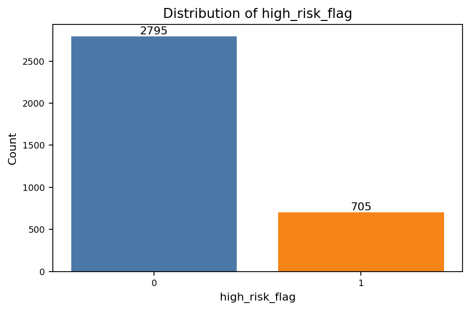
Class balance and screening-target distribution.
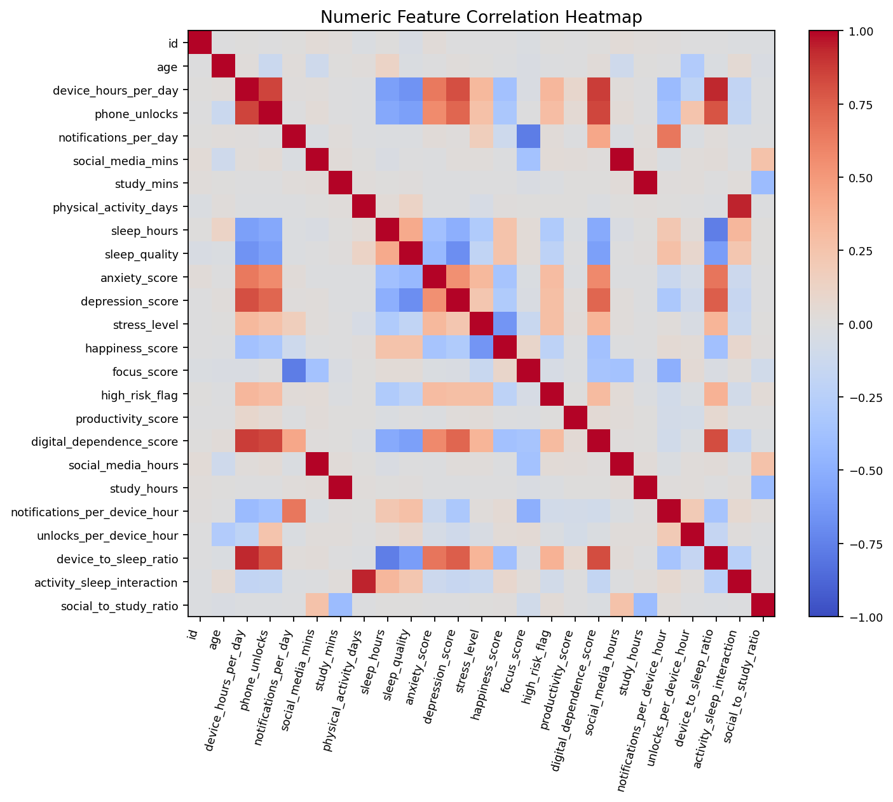
Correlation patterns among numeric behavior and outcome variables.
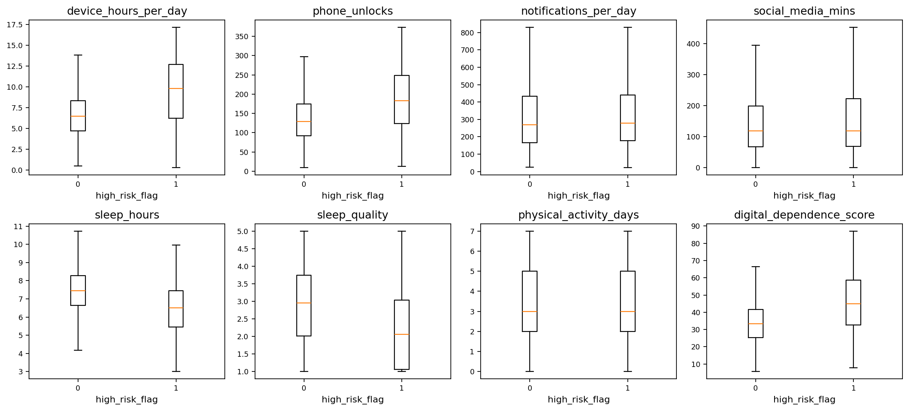
Group-level differences between high-risk and non-high-risk samples.
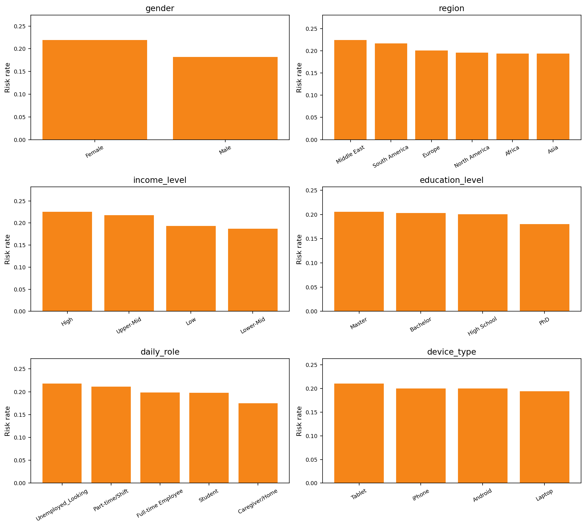
Risk-rate comparison across categorical groups.
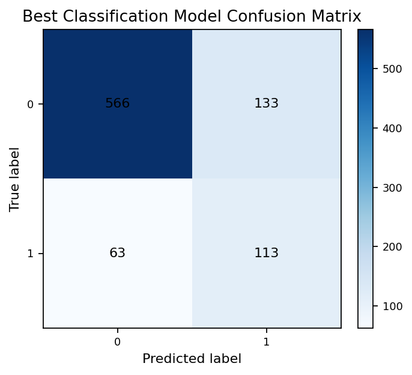
Final classification errors and correct predictions.
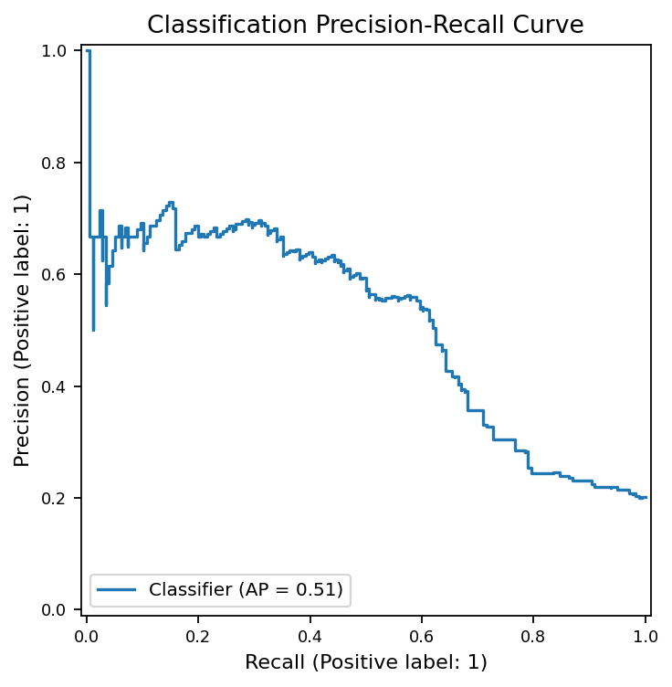
Precision-recall behavior for the screening model.
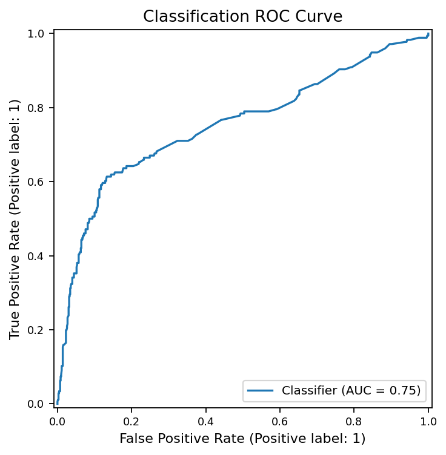
ROC behavior for the final classifier.
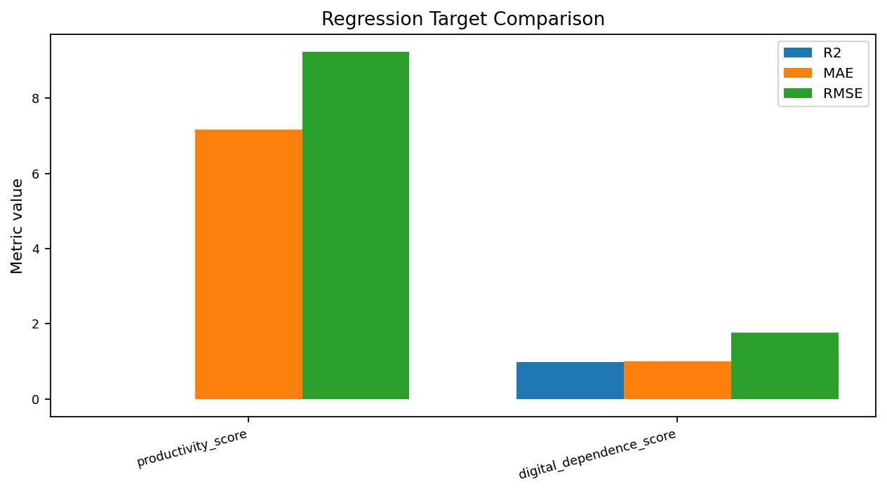
Comparison of regression targets and modeling difficulty.
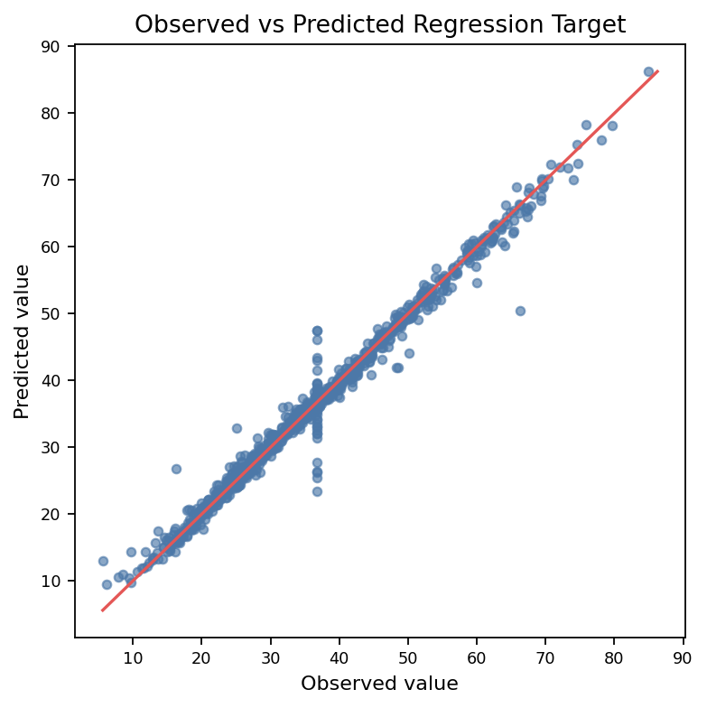
Observed versus predicted digital dependence scores.
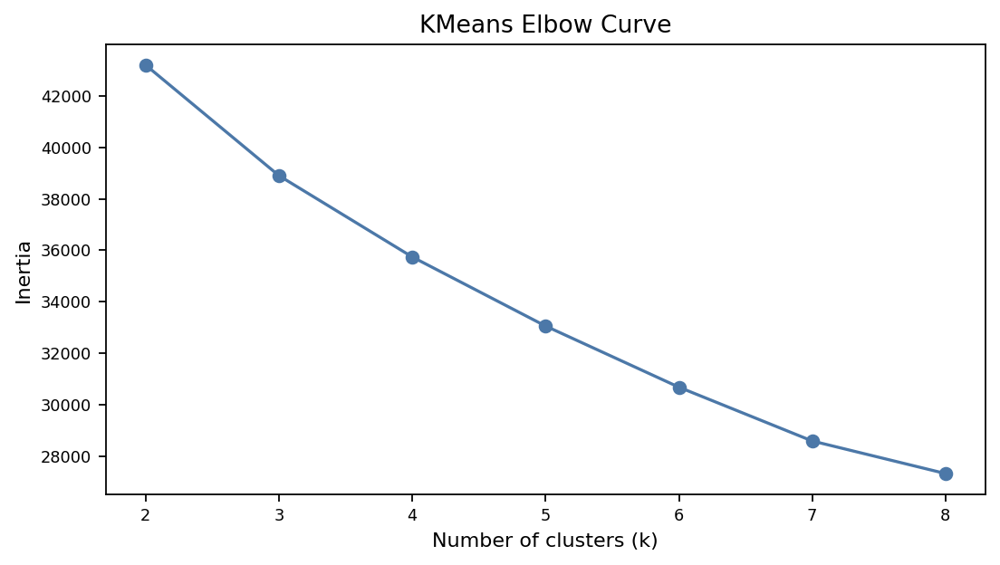
K selection evidence for KMeans clustering.
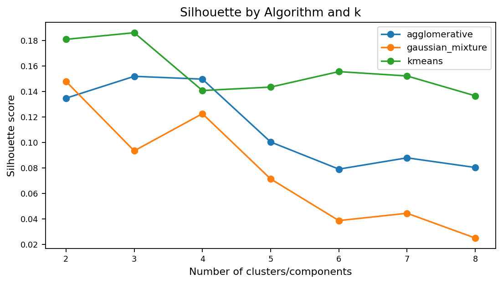
Silhouette score comparison across candidate cluster counts.
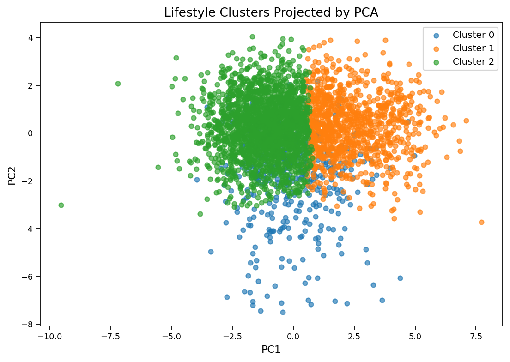
PCA projection of lifestyle clusters.
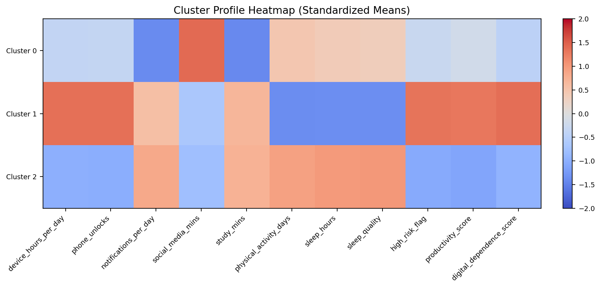
Cluster-level profile interpretation across selected features.
Big-Data-Homework/
final project directory/
data/
notebooks/
src/
scripts/
figures/
results/
final_submit/
overleaf_final/
web_demo/
requirements.txtRun locally: install dependencies with pip install -r requirements.txt, run notebooks 00 to 05 in order, open the final DOCX, and open web_demo/index.html directly in a browser.
Boundaries: the dataset is synthetic benchmark data; the high-risk model is a screening tool, not a diagnosis tool; the regression result does not imply causality; clustering is exploratory; no online inference is provided.